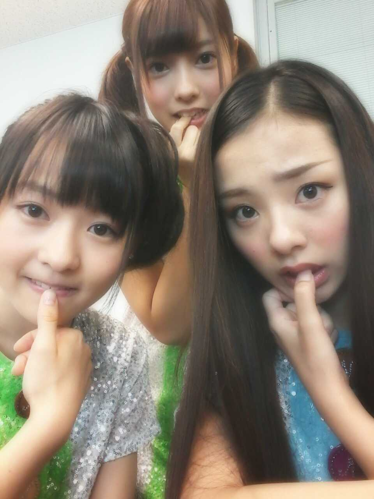

| 2012/08 21 Tue | 川村真洋 今までと全く違う一年間★☆★ろ ってぃー |
ほっほーーーい*^^*
皆様, 今日は, , ,
なななナントっ!
乃木坂 一周年記念だよーーー＼(^o^)／
♪ )))
私達 乃木坂46は
去年の8/21に
AKB48様の公式ライバルとして
作られたグループです★☆★
全国から集まってきた
メンバー達。
第一印象☆
360ド見渡しても
可愛すぎる女の子で
あせりました>_<笑
でも 冗談抜きで
最終オーディションの日
本間に びっくりしてました*^^*
そんなメンバー達と
もう一年一緒におる。
あっとゆうまだな〜(^-^)
色んな方言が
あっちこっちから
聞こえてきて
33人 それぞれに個性があって
おもしろくて優しい
メンバー★☆★
去年よりさらに
仲が深まって
今はもうほとんどの時間が
メンバーと一緒にいる時間。
いつもじゃれあって
団結し頑張って
くだらないことで笑って
辛い時は 助けあって...
最高の仲間です(*^^*)★

親指 噛んじょる =・ω・=
でも 正直...
辛いことは付き物でした。
自分の気持ちを
抑え込むのに必死で
でもあまり人に頼りたくなくて
Zepp難波の乃木坂初の単独ライブ☆
記念すべき
乃木坂46のデビュー曲
『ぐるぐるカーテン♪』
まひろはぐるカー選抜だったはずなのに
出れなかった。
本当に申しわけないと思いました´`
ごめんなさい。
まひろも自分が歌ってた曲だし
やっぱ、歌いたかったです...。
乃木坂に入って
初めての経験を
たくさんしました*^^*
握手会もどーすると
きてくれたファンの皆様に
喜んでもらえるのかな?だとかも
あって
でも少しずつ
自分の気持ちを
人に伝えるってゆうことが
できるようになってきて
まひろは 握手会が大好きです*^^*
いつも応援してくださっている
皆様と直接会って
話せる時間が
本間に幸せ♪
どんだけ
皆様にはげまされて
きただろうねんっ*・ω・*)))
これからも
努力・感謝・笑顔を
忘れずに
ファンの皆様
スタッフの皆様
メンバーの皆
家族への
感謝の気持ちを忘れずに
大切にしていきます(⌒‐⌒)
メンバー全体としても
自分自身も
もっともっと
努力していいライブを
つくりあげたいです!
坂を登り続けます☆!!
以上っ☆ ))
ろってぃーでしたあ.
ありがとう〃ω〃
のし。
メンバーの皆
家族への
感謝の気持ちを忘れずに
大切にしていきます(⌒‐⌒)
メンバー全体としても
自分自身も
もっともっと
努力していいライブを
つくりあげたいです!
坂を登り続けます☆!!
以上っ☆ ))
ろってぃーでしたあ.
ありがとう〃ω〃
のし。